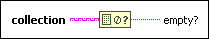
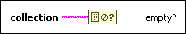

Empty Collection? Function
Requires: Base Development System
Returns TRUE if the input collection contains zero elements or entries.

 Add to the block diagram Add to the block diagram |
 Find on the palette Find on the palette |
Requires: Base Development System
Returns TRUE if the input collection contains zero elements or entries.

| Add to the block diagram |
Find on the palette |
 |
collection specifies the collection. This input accepts any collection data type. |
 |
empty? returns TRUE if collection is empty. Otherwise, this output returns FALSE. |
Refer to the following VIs for examples of using the Empty Collection? function:
 Open example Find related examples
Open example Find related examples
Open example Find related examples
Open example Find related examples